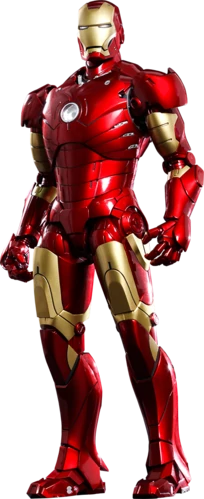
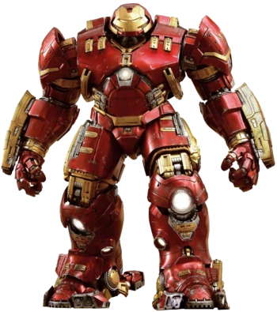
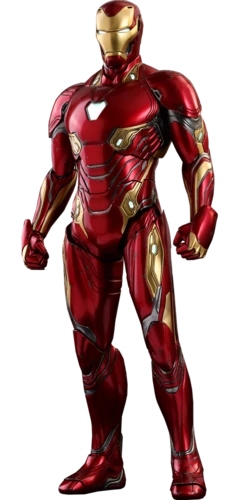

La compañía está representada por el empresario Anthony Edward "Tony" Stark, también conocido como Iron Man. Apareció por primera vez en Tales of Suspense # 40 (abril de 1963) y fue fundado por el padre de Tony, Howard Stark. Según Forbes, las 25 compañías de ficción más grandes tenía unas ventas estimadas de $ 20.3 mil millones, clasificándolo en el número 16.
En Marvel Cinematic Universe, Industrias Stark tiene un logo similar al de los contratistas de defensa Lockheed Martin y Northrop Grumman y figura en la Bolsa de Nueva York como SIA. Durante la escena de la conferencia de prensa, Stark es visto entrando a un edificio que se asemeja a la entrada de las instalaciones de Skunk Works de Lockheed Martin. Un aeroplano extremadamente similar al Lockheed YF-22 quedó como una estatua en frente de las instalaciones de Industrias Stark, exactamente como los prototipos que se exhiben en las instalaciones Skunk Works en Palmdale, California.
Biografia
Industrias Stark fue fundada por Isaac Stark Sr en el siglo XIX y más tarde dirigida por Howard Stark y luego por su hijo Tony, después de su muerte. Con los años, a través de la quiebra, la "muerte" de Tony, el regreso de Tony y adquisiciones hostiles, la empresa ha pasado por muchos cambios de nombres, incluyendo Stark Internacional (más tarde Stane Internacional), Empresas Stark, Stark/Fujikawa y Soluciones Stark.
Trajes



S.T.A.R. LABS
S.T.A.R. Labs son las iniciales en inglés para Laboratorios de Investigación Avanzada Científica y Tecnológica (Scientific and Technological Advanced Research Labs) una instalación y organización de investigación científica ficticia de los cómics estadounidenses publicados por DC Comics. Apareció por primera vez en Superman # 246 (diciembre de 1971) y fue creado por Cary Bates y Rich Buckler. Las instalaciones también funciona como centro médico donde los superhéroes reciben tratamiento.
S.T.A.R. Labs se introdujo en Superman # 246 (diciembre de 1971). En los cómics de Superman, el Profesor Hamilton trabajó anteriormente allí, y la Dra. Kitty Faulkner, también conocida como la superheroína Rampage, trabaja actualmente allí.
La ubicación de Metrópolis aparece en una batalla y como un punto de la trama en Armageddon 2001.
En Teen Titans, los padres de Cyborg, Silas y Eleanor Stone, y su antiguo interés amoroso, la Dra. Sarah Charles, trabajaron para S.T.A.R. Labs.
Los empleados anteriores de S.T.A.R. Labs son Murray Takamoto, la Dra. Jenet Klyburn, el Prof. Dr. eL Mohammed y el Dr. Albert Michaels (el primer Atomic Skull). El personaje del Dr. Klyburn se basó en la presidenta entrante de DC Comics, Jenette Kahn.
La miniserie de cómics de 1993, S.T.A.R. Corps, trataba sobre un grupo de superhumanos que habían ganado inadvertidamente sus poderes en un experimento de S.T.A.R. Labs.
La organización aparece en la miniserie de 1996 La noche final. Mientras el invierno eterno amenaza al mundo, gracias al Sun-Eater, S.T.A.R. Labs mantiene actualizada su página web con ánimo y diversa información relacionada con la emergencia.
Las sucursales de S.T.A.R. Labs en San Francisco y Montana juegan un papel importante en Justice League of America # 110-114 (2005).
52 Aftermath: The Four Horsemen # 1 (octubre de 2007) muestra una operación de socorro de S.T.A.R. Labs trabajando, codo a codo con Waynetech, en los restos devastados del país de Bialya. Todos los trabajadores humanitarios son asesinados por fuerzas externas.
Los últimos números de DC Universe: Legacies muestran la vida del director de seguridad de Metrópolis Star Labs, Jim M.
Personal
Tony Stark (Iron Man) - Multimillonario y CEO de Industrias Stark.
Obadiah Stane - Oficial ejecutivo (fallecido).
Happy Hogan- Frente de seguridad.
Pepper Potts- CEO.
Dr. Gray Armond- Jefe de Diseño
Harmon Furmintz - Miembro de la división bioquímica de Industrias Stark.
Jacob Fury (Escorpio) - exinvestigador científico.
Sally McIntyre.
Eddie March- Antigua parte de la Legión de Hierro.
Kevin O'Bryan.
Ralph Roberts.
Anton Vanko (Crimson Dynamo)- Excientífico jefe y desarrollador jefe (fallecido).